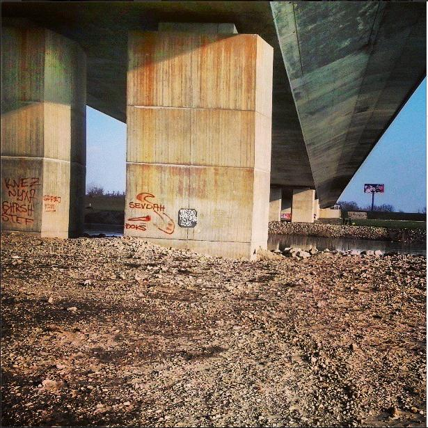

Pozdrav i dobrodošli!
Dobrodošli na osobnu web stranicu jednog mladog informatičara, freelance web dizajnera te naravno studenta.
Ovaj web je napravljen da bi ste me mogli još bolje upoznati, saznati nešto o mojem životu te da bih vas podučio nekim stvarima koje znam.
O meni
Kao što možete iščitati iz imena weba zovem se Marko. Imam 19 godina (uskoro 20-ta kuca na vrata), student sam TVZ-a te sam po vjeri kršćanin. U slobodno vrijeme se bavim svime i svačime. Najviše me zanimaju računala i taj IT svijet. Uz sve to aktivan sam u maloj župnoj zajednici, te uvijek ulovim vremena sa omanju (a ponekad i oveću) biciklističku rutu.
Naravno prije studenstkih dana četiri sam godine proveo u Ruđeru (Zagreb) a još prije toga sam osam godina grijao klupe OŠ Žitnjak.
Informatikom se bavim od petog razreda osnovne. Tada je to bilo bauk jer su računala bila skupa te sam znao samo osnove rada na računalu. No kako je vrijeme prolazilo počeo sam učiti mnogo više o tim IT stvarima. Kao i svi drugi to je prvo bilo uhodavanje u svijet operativnih sustva, pa onda tek negdje u sedmom osnovne sam se zainteresirao i za hardveraj računala.
Sa programiranjem sam se prvi put susreo u petom osnovne. Tada je to bio LOGO. Bilo je zabavno pa sam bio radoznao te sam onda počeo se igrati i u qBasicu. Prve linije web koda sam napravio tamo negdje u šestom razredu uz pomoć knjige iz infice. Naravno to tada nismo obradili već smo se time bavili tek tamo negdje u osmom razredu i to minimalno. Naravno da sam kao i obično vrlo brzo počeo sa igranjem u Dreamweaveru, FrontPageu i sličnim WYSYWG web editorima. Prvi pošteni web (svoj naravno) sam napravio davne 2009-te. Tada je to rađeno prema ondašnjim standardima.
Sve ostalo što sam tada pokušavao su bili prosječni pokušaji da što više naučim o web dizajnu i web administraciji. Bilo je dosta padova, pljuvanja i grešaka na svakome koraku (ekipa sa BUG Foruma iz teme Community review vaših web stranica me dobro poznaje, te im zahvaljujem na svim savjetima koje su dali te koje sam uvažio).
Ostalo što radim je pomalo i poznata stvar. Nije me sram reći da još učim neke stvari o web dizajnu jer ipak treba se prilagoditi vremenu u kojem se sve dešava oko nas. Ovih dana primjerice učim ponešto o jQuery-u te JavaScriptu jer znam da će mi uskoro oni dosta trebati. Nije pohvalno to što primjerice se često služim " šalabahterom " za neke naredbe u HTML-u 5 te CSS-u.
Od ostalog programiranja koje sam učio želio bih istaknuti C programski jezik te njegove bliže srodnike C++ i C# . Sa njima sam se upoznao u srednjoj, te ću ih morati primjenjvati i na faksu (barem C koliko čujem od starijih generacija).
P.S.: Moju sliku pronađite na mojem facebook profilu.
Moji radovi

Link do weba: http://www.zupa-petrusevec.hr
Godina izrade: 2012
Tehnologije korištene u izradi: HTML5, CSS3, WordPress
Godina nastanka fotografije: 2013
Ime glazbenog rada: Unityfication
Žanr: Electronic
Link do weba: http://e-portal-hrvatska.tk
Godina izrade: 2013
Tehnologije korištene u izradi: HTML5, CSS3, WordPress
Ime glazbenog rada: Intro glazba za video tutoriale
Žanr: Rock
Godina nastanka fotografije: 2013- 
Godina nastanka fotografije: 2012
Godina nastanka fotografije: 2012
Link do weba: http://goo.gl/xaJY0
Godina izrade: 2011
Tehnologije korištene u izradi: HTML5, CSS3, WordPress
Godina nastanka fotografije: 2013
Link do weba: http://www.vmkonzalting.hr/
Godina izrade: 2010
Tehnologije korištene u izradi: XHTML 1.0 Transitional, CSS 2.1
Link do weba: http://goo.gl/aeag3x
Godina izrade: 2011
Tehnologije korištene u izradi: HTML5, CSS3, Blogger
{kind=link}
{kind=link}
{kind=link}
{kind=link}
{kind=link}
{kind=link}
{kind=link}
Kontakt
Ukoliko me želite kontaktirati možete to učiniti preko slijedeće kontat forme ili putem metoda koje se nalaze u bočnoj traci
Možete me pronaći preko slijedećih društvenih mreža

Slijedećih e-mail adresa
marko.idzan@markoidzan.from.hrmidzan21@gmail.com